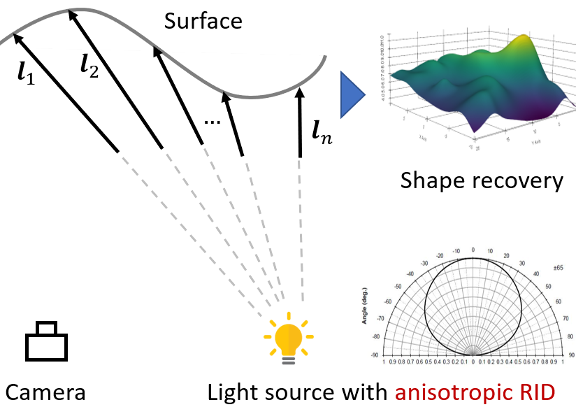
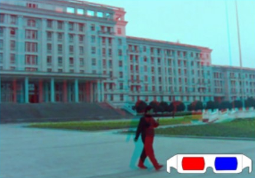

|
Heng Guo 郭亨 Specially Appointed Researcher (特聘研究员) PRIS Lab School of Artificial Intelligence Beijing University of Posts and Telecommunications Email: guoheng [at] bupt.edu.cn [GITHUB] [CV] [Google Scholar] |

|
About Me
I received my Ph.D. (Oct. 2018 - Mar. 2022) from Osaka University under the supervision of Prof. Yasuyuki Matsushita and Prof. Boxin Shi. Previously I obtained my Master and Bachelor degree in 2018 and 2015, both from University of Electronic Science and Technology of China (UESTC), under the supervision of Prof. Bing Zeng and Prof. Shuaicheng Liu.
My research interest includes computational photograpy and computer vision.
News
Publications

NeRSP: Neural 3D Reconstruction for Reflective Objects with Sparse Polarized Images
Heng Guo,
Jieji Ren,
Feishi Wang,
Mingjun Ren,
Boxin Shi,
Yasuyuki Matsushita
In IEEE Conference on Computer Vision and Pattern Recognition (CVPR 2024).
[Paper] [Project page]

NeRSP: Neural 3D Reconstruction for Reflective Objects with Sparse Polarized Images
Yufei Han,
Heng Guo*,
Koki Fukai,
Hiroaki Santo,
Boxin Shi,
Fumio Okura,
Zhanyu Ma,
Yunpeng Jia
In IEEE Conference on Computer Vision and Pattern Recognition (CVPR 2024).
[Paper] [Project page][Code]
ReLeaPS : Reinforcement Learning-based Illumination Planning for Generalized Photometric Stereo
Jun Hoong Chan, Bohan Yu, Heng Guo, Jieji Ren, Zongqing Lu, Boxin Shi
In International Conference on Computer Vision (ICCV 2023).
[Paper] [Project page]
DiLiGenT-Pi: Photometric Stereo for Planar Surfaces with Rich Details – Benchmark Dataset and Beyond
Feishi Wang, Jieji Ren, Heng Guo, Mingjun Ren, Boxin Shi
In International Conference on Computer Vision (ICCV 2023).
[Paper] [Project page]

Learning to Synthesize Photorealistic Dual-pixel Images from RGBD frames
Feiran Li, Heng Guo, Hiroaki Santo, Fumio Okura, Yasuyuki Matsushita.
In International Conference on Computational Photography (ICCP 2023).
[Paper] [Code and dataset]
Near-light Photometric Stereo with Symmetric Lights
Lilika Makabe, Heng Guo, Hiroaki Santo, Fumio Okura, Yasuyuki Matsushita.
In International Conference on Computational Photography (ICCP 2023).
[Paper][Supp]
Neural BRDF Plugin for Unsupervised Photometric Stereo
Heng Guo, Boxin Shi, Yasuyuki Matsushita.
In IEEE International Conference on Network Intelligence and Digital Content (IC-NIDC 2023).
[Paper][Award]
Non-Lambertian Multispectral Photometric Stereo via Spectral Reflectance Decomposition
Jipeng Lv, Heng Guo, Guanying Chen, Jinxiu Liang, Boxin Shi.
In International Joint Conferences on Artificial Intelligence (IJCAI 2023).
[Paper] [Code and dataset]

Edge-preserving Near-light Photometric Stereo with Neural Surfaces
Heng Guo, Hiroaki Santo, Boxin Shi, Yasuyuki Matsushita.
Pre-print
[Paper]
Multispectral Photometric Stereo for Spatially-Varying Spectral Reflectances
Heng Guo, Fumio Okura, Boxin Shi, Takuya Funatomi, Yasuhiro Mukaigawa, Yasuyuki Matsushita.
In International Journal of Computer Vision (IJCV 2022).
[Paper] [Video] [MPS data]
Patch-based Uncalibrated Photometric Stereo under Natural Illumination
Heng Guo, Zhipeng Mo, Boxin Shi, Feng Lu, Sai-Kit Yeung, Ping Tan, Yasuyuki Matsushita.
In IEEE Transactions on Pattern Analysis and Machine Intelligence (TPAMI 2021).
[Paper]

Multispectral Photometric Stereo for Spatially-Varying Spectral Reflectances: A well posed probelm?
Heng Guo, Fumio Okura, Boxin Shi, Takuya Funatomi, Yasuhiro Mukaigawa, Yasuyuki Matsushita.
In IEEE Conference on Computer Vision and Pattern Recognition (CVPR 2021).
[Paper]
[Video]
[Slide]
[Poster]

Self-calibrating Near-light Photometric Stereo under Anisotropic Light Emission
Heng Guo, Boxin Shi, Michael Waechter, Yasuyuki Matsushita.
In Meeting on Image Recognition and Understanding (MIRU 2020). (Best Student Paper)
[Paper] [Award]
View-Consistent MeshFlow for Stereoscopic Video Stabilization
Heng Guo, Shuaicheng Liu, Shuyuan Zhu, Heng Tao Shen, Bing Zeng.
In IEEE Transactions on Computational Imaging (TCI 2018).
[Paper]
[Video]

Joint Bundled Camera Paths for StereoScopic Video Stabilization
Heng Guo, Shuaicheng Liu, Shuyuan Zhu, Bing Zeng
In International Conference on Image Processing (ICIP 2016) (Oral)
[Paper] [Website]

Joint Video Stitching and Stabilization from Moving Cameras
Heng Guo, Shuaicheng Liu, Tong He, Shuyuan Zhu, Bing Zeng, Moncef Gabbouj.
In IEEE Transactions on Image Processing (TIP 2016)
[Paper] [Website]
{kind=link}